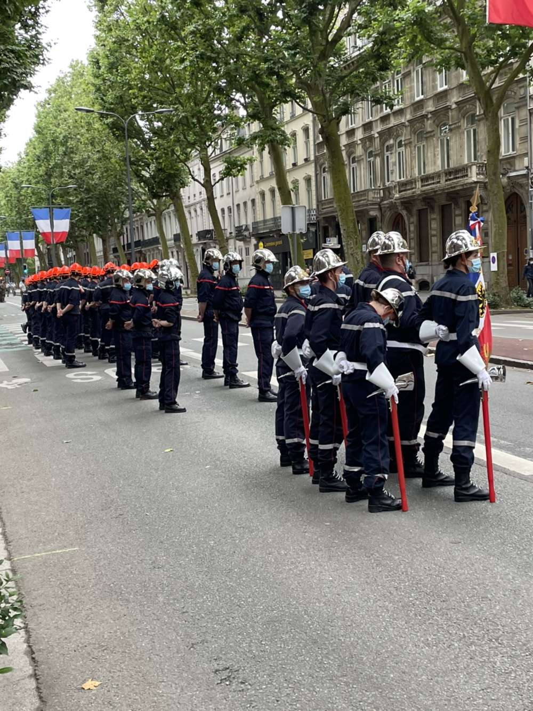
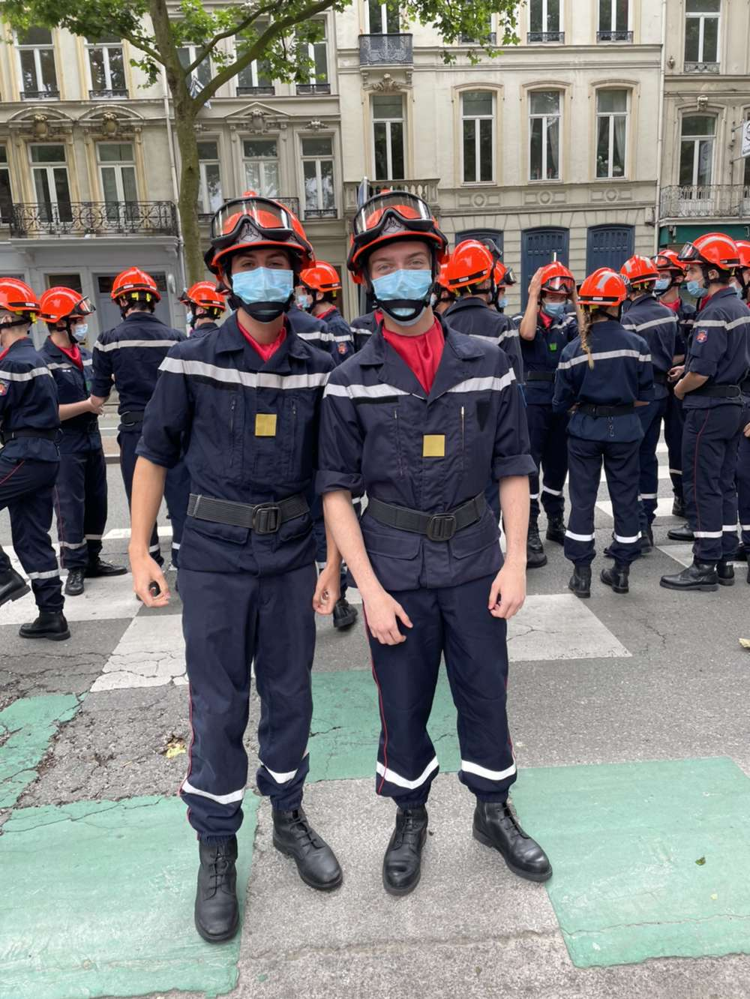

Mes activités extrascolaires !
Sur cette page, je vais présenter mes activités extrascolaires à l'aide de photos et d'explications
Mon activité principale en dehors du Lycée est ma formation de Jeune Sapeur Pompier à laquelle je consacre beaucoup de mon temps libre.
Principalement 4 heures le samedi après-midi de 14h à 18h mais aussi des révisions la semaine sur la théorie et de temps en temps certaines cérémonies.
Comme exemple le défilé du 14 Juillet à Lille ce mercredi.

Je fais cette formation avec Merlin Delariviere que vous connaissez probablement

⚠️Le site n'est pas terminé⚠️